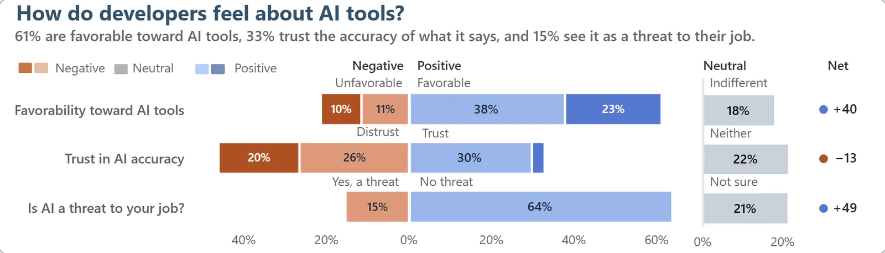

Chart 1 · Three questions
How do developers feel about AI tools?
Each question split into negative (left) and positive (right) answers, with the neutral answer on its own and the net score, positive minus negative.
- Finding
Developers use AI more than they trust it. 61% are favorable toward AI tools (net +40), yet 46% distrust the accuracy of what it says against 33% who trust it (net −13). Only 15% see AI as a threat to their job; 64% do not.
With 78.5% using AI tools at least monthly, we read the gap between use and trust as developers treating AI output as a draft to check rather than rejecting the tools.
- Note
- Non-responses (27–32% on the AI questions) are left out of every rate; each rate carries its N.